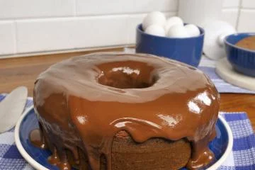
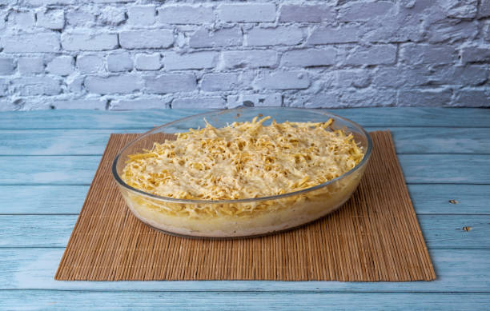

Bem-vindo ao Delícias da Cozinha
Aqui você encontra as melhores receitas para todas as ocasiões. Explore e descubra novos sabores!
Receitas
Bolo de Chocolate

Uma receita deliciosa de bolo de chocolate que derrete na boca.
Ingredientes
- 2 xícaras de farinha de trigo
- 1 e 1/2 xícaras de açúcar
- 3/4 xícara de cacau em pó
- 2 colheres de chá de fermento em pó
- 1 e 1/2 colheres de chá de bicarbonato de sódio
- 1 colher de chá de sal
- 2 ovos
- 1 xícara de leite
- 1/2 xícara de óleo vegetal
- 2 colheres de chá de extrato de baunilha
- 1 xícara de água fervente
Modo de Preparo
- Preaqueça o forno a 180°C. Unte e enfarinhe uma forma de bolo.
- Misture todos os ingredientes secos em uma tigela grande.
- Adicione os ovos, leite, óleo e baunilha à mistura seca. Bata bem.
- Acrescente a água fervente e misture até incorporar.
- Despeje a massa na forma preparada e asse por 30-35 minutos.
- Deixe esfriar antes de servir.
Fricassé de Frango

Uma receita deliciosa de fricassé de frango para encantar a todos.
Ingredientes
- 1 peito de frango cozido e desfiado
- 1 lata de milho verde
- 1 lata de creme de leite
- 1 copo de requeijão
- 100g de azeitonas sem caroço
- 200g de mussarela fatiada
- 100g de batata palha
- 1 cebola picada
- 2 dentes de alho picados
- Sal e pimenta a gosto
- Azeite para refogar
Modo de Preparo
- Refogue a cebola e o alho no azeite até dourarem.
- Adicione o frango desfiado e refogue por mais alguns minutos.
- No liquidificador, bata o milho, creme de leite e requeijão até homogeneizar.
- Misture o creme à panela com o frango. Adicione azeitonas, sal e pimenta.
- Cozinhe por alguns minutos e transfira para um refratário.
- Cubra com mussarela e leve ao forno até derreter.
- Sirva com batata palha.
Sobre Nós
Somos apaixonados por cozinhar e compartilhar nossas receitas favoritas. Nosso objetivo é trazer sabor e alegria para sua cozinha.